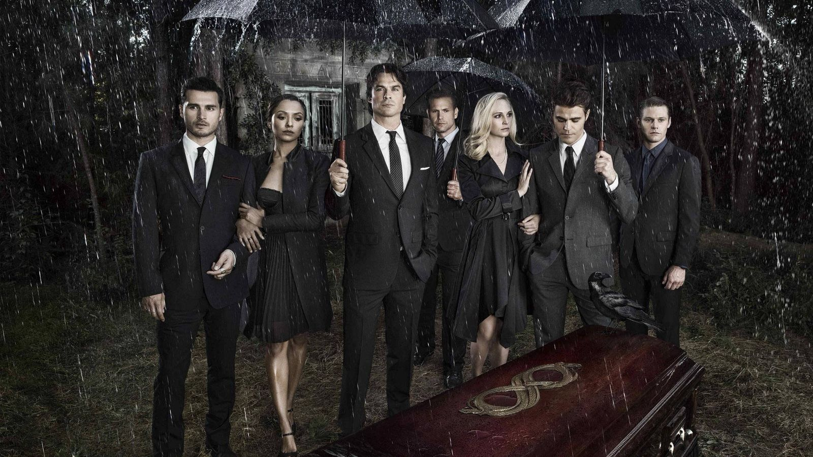

The Vampire Diaries é uma série de drama, romance e fantasia baseada nos livros de L. J. Smith. A história se passa na cidade fictícia de Mystic Falls e acompanha a vida de Elena Gilbert, uma jovem que se envolve com os irmãos vampiros Stefan e Damon Salvatore.
A série foi exibida entre 2009 e 2017 e conquistou milhões de fãs ao redor do mundo por sua mistura de romance, mistério, ação e elementos sobrenaturais.
Ao longo das temporadas, vampiros, bruxas, lobisomens e outras criaturas sobrenaturais enfrentam batalhas, alianças e romances que mudam o destino da cidade.
The Vampire Diaries foi exibida entre 2009 e 2017 e conquistou milhões de fãs em todo o mundo. A série combina romance, drama, fantasia e elementos sobrenaturais, tornando-se uma das produções mais populares de sua época.
A história foi inspirada nos livros da autora L. J. Smith. Apesar de ser baseada nos livros, a série apresenta várias diferenças em relação à obra original.
O universo de The Vampire Diaries ficou tão popular que deu origem a outras séries, como The Originals e Legacies, expandindo ainda mais a história dos personagens e das criaturas sobrenaturais.